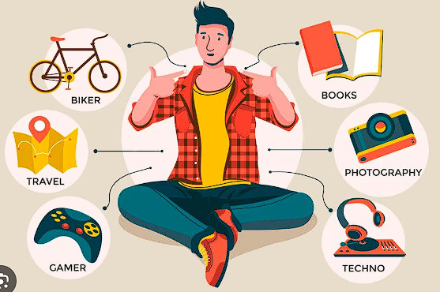
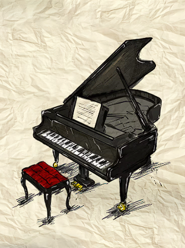
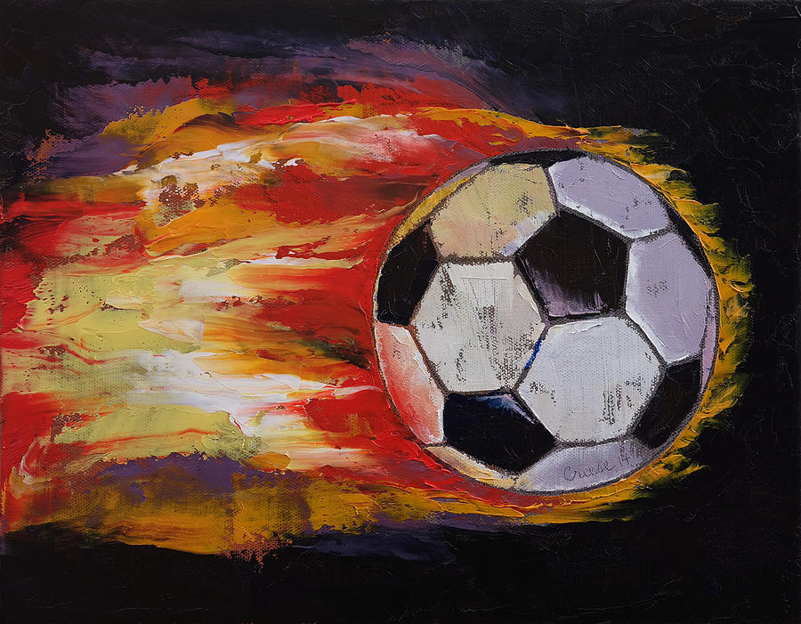
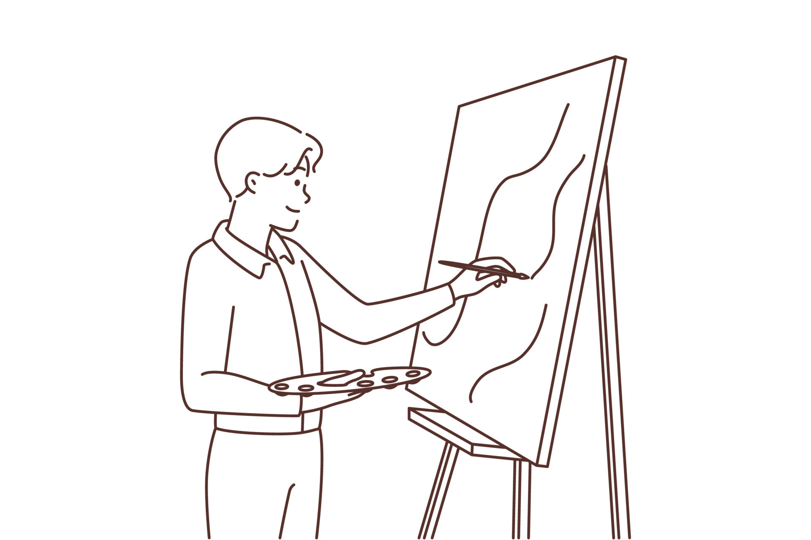

Hobbies

The things i love doing in my free time are:
- Playing Piano
Playing the piano appeals to me because it offers a deep way of expressing myself. Every piece I play tells a story, and through the sound of the piano, I can convey emotions that words sometimes fail to capture. It's a calming yet creative way to let my soul speak.

- Soccer
Soccer brings me energy and a sense of teamwork. I enjoy the dynamic nature of the game, the idea of healthy competition, and the joy of being part of a group where everyone contributes. It also helps me stay active and disconnect from everyday routines.

- Photography
Photography attracts me because it teaches me to see the world differently — with greater attention to detail. I love capturing moments, expressions, landscapes, or light that might otherwise go unnoticed. It’s an art form that gives me both visual and emotional satisfaction.

- Computers
Computers fascinate me through their complexity and logic. I enjoy learning how things work behind the screen, exploring, creating, or solving problems. It’s a field that intellectually challenges me and constantly motivates me to grow.

- Drawing
Drawing, which I loved as a child, was a gateway to my imagination. I enjoyed giving shape to my thoughts and fantasies on paper, inventing characters or expressing what I felt. It was a peaceful and colorful activity that helped nurture my creativity from an early age.
